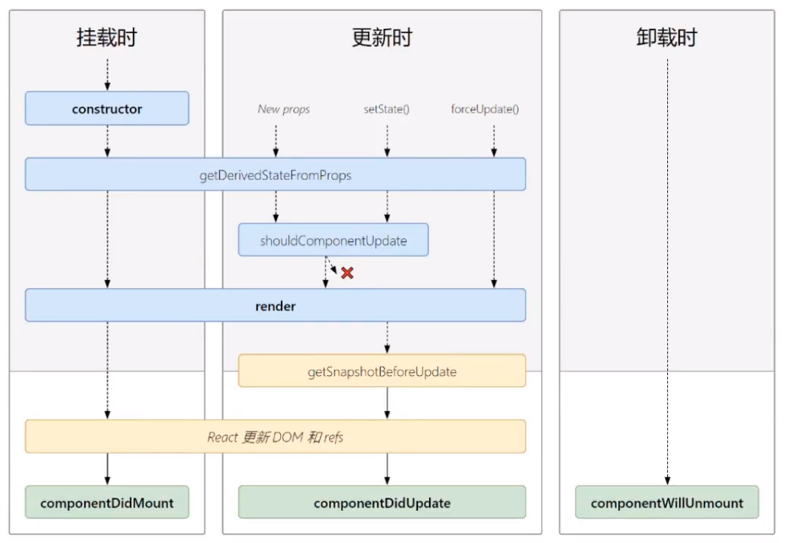

<!DOCTYPE html>
<html lang="en">
<head>
    <meta charset="UTF-8">
    <meta http-equiv="X-UA-Compatible" content="IE=edge">
    <meta name="viewport" content="width=device-width, initial-scale=1.0">
    <title>Document</title>
</head>
<body>
    <div id="root"></div>

    <script src="https://unpkg.zhimg.com/react@17.0.2/umd/react.development.js"></script>
    <script src="https://unpkg.zhimg.com/react-dom@17.0.2/umd/react-dom.development.js"></script>
    <script src="https://unpkg.zhimg.com/@babel/standalone/babel.min.js"></script>
    <script type="text/babel">
        class Count extends React.Component {

            state = {
                count: 0
            }

            // 构造器
            constructor(props) {
                super(props)
                console.log('Count---constructor...')   
            }

            // 若state的值取决于props，可以设计用getDerivedStateFromProps
            static getDerivedStateFromProps(props, state) {
                console.log('Count---getDerivedStateFromProps...', props, state)
                // return props
                return null
            }

            // 在更新之前获取快照
            getSnapshotBeforeUpdate() {
                console.log('Count---getSnapshotBeforeUpdate...')
                // return null
                return {name: 'react', age: 10}
            }

            // 组件挂载完成的钩子
            componentDidMount() {
                console.log('Count---componentDidMount...')
            }
            
            // 组件将要卸载的钩子
            componentWillUnmount() {
                console.log('Count---componentWillUnmount...')
            }

            // 返回值决定组件是否更新
            shouldComponentUpdate() {
                console.log('Count---shouldComponentUpdate...')
                return true
            }

            // 组件更新完成的钩子
            componentDidUpdate(prevProps, prevState, snapshotValue) {
                console.log('Count---componentDidUpdate...', prevProps, prevState, snapshotValue)
            }

            handleCum = () => {
                const {count} = this.state
                this.setState({
                    count: count+1
                })
            }

            handleUnmount = () => {
                ReactDOM.unmountComponentAtNode(document.getElementById('root'))
            }

            handleForceUpdate = () => {
                this.forceUpdate()
            }

            // 渲染
            render() {
                console.log('Count---render...')
                return (
                    <div>
                        <h2>count: {this.state.count}</h2>
                        <button onClick={this.handleCum}>Click Me +1</button><br/>
                        <button onClick={this.handleUnmount}>Unmount Component</button><br/>
                        <button onClick={this.handleForceUpdate}>Force Update</button><br/>
                        <div>
                            
                        </div>
                    </div>
                )
            }
        }
       
        ReactDOM.render(<Count count={100} />, document.getElementById('root'))
    </script>
</body>
</html>